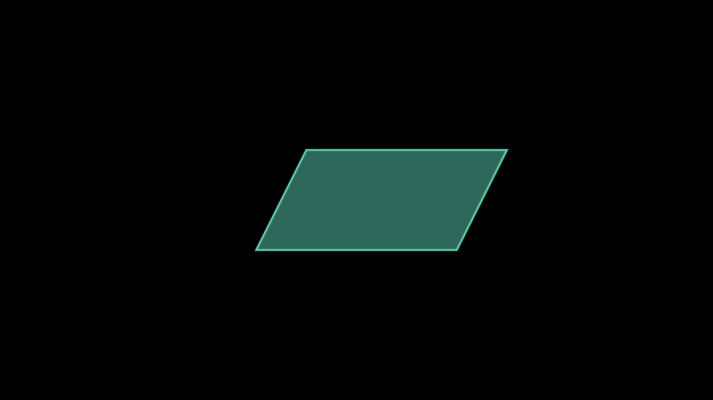
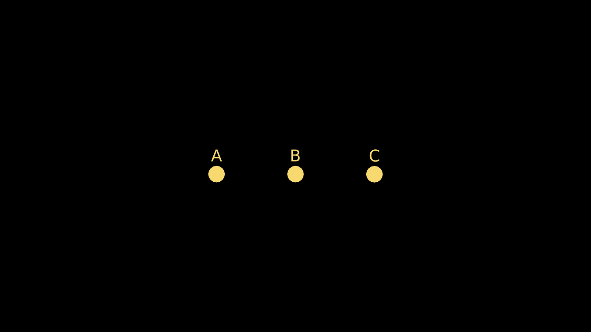
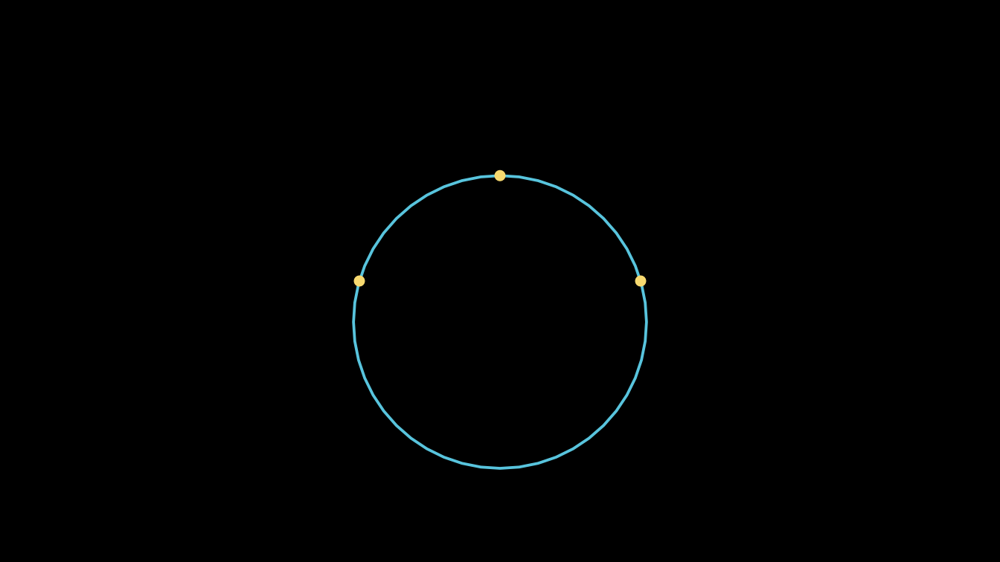
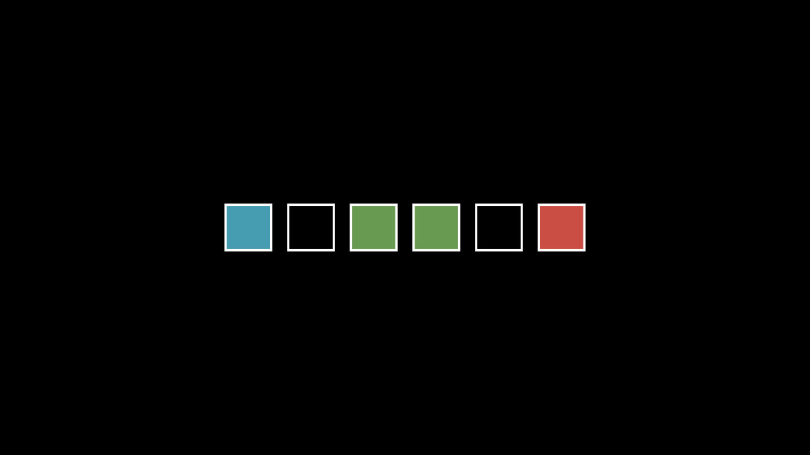
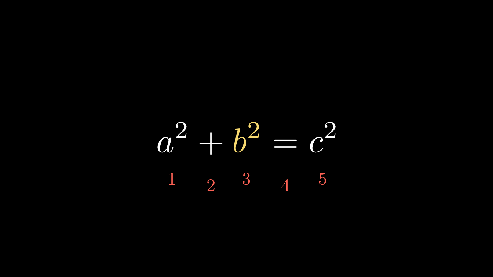
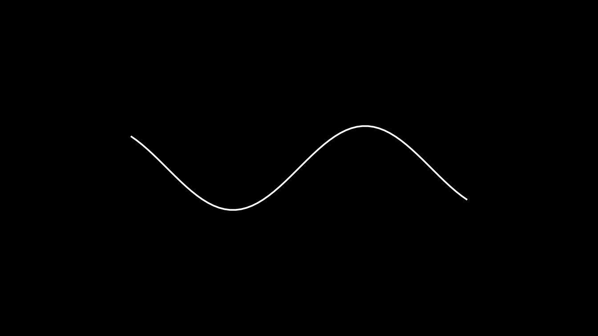

manimR follows the API of Manim Community (version 0.22.1) closely:
the classes, methods and arguments have the same names and the same
defaults, and every public name of from manim import * has
an R counterpart. What changes is the language around them. This guide
translates Python manim code to R, one construct at a time, and lists
every place where manimR deliberately differs: a handful of renamed
names, and indices that start at 1 instead of 0.
Python snippets are shown in python blocks and are not
run. The R code is run when this vignette is built, so every R example
below works as shown.
The same scene in both languages
Here is a short Python scene:
from manim import *
class SquareAndCircle(Scene):
def construct(self):
circle = Circle(radius=1, color=BLUE).set_fill(BLUE, opacity=0.5)
square = Square(side_length=2, color=GREEN)
square.next_to(circle, RIGHT, buff=0.5)
group = VGroup(circle, square).move_to(ORIGIN)
self.play(Create(circle), FadeIn(square), run_time=1.5)
self.play(square.animate.rotate(PI / 4).set_fill(GREEN, opacity=0.8))
self.play(group[0].animate.shift(UP))
self.wait(0.5)and the same scene in R:
SquareAndCircle <- R6::R6Class("SquareAndCircle", inherit = Scene,
public = list(construct = function() {
circle <- Circle(radius = 1, color = BLUE)$set_fill(BLUE, opacity = 0.5)
square <- Square(side_length = 2, color = GREEN)
square$next_to(circle, RIGHT, buff = 0.5)
group <- VGroup(circle, square)$move_to(ORIGIN)
self$play(Create(circle), FadeIn(square), run_time = 1.5)
self$play(square$animate$rotate(PI / 4)$set_fill(GREEN, opacity = 0.8))
self$play(group[1]$animate$shift(UP))
self$wait(0.5)
})
)The differences are all mechanical:
- the class is an R6 class that inherits from
Scene; -
constructis a function in the class’spubliclist, andselfis available inside it without being an argument; - methods are called with
$instead of.; - keyword arguments use
=with spaces by convention, and assignment uses<-; -
group[0]becomesgroup[1], because R counts from 1.
Constructors, method names, argument names, constants
(BLUE, RIGHT, PI) and animation
names are unchanged.
Imports
| Python | R |
|---|---|
from manim import * |
library(manimR) |
import manim; manim.Circle() |
manimR::Circle() |
import numpy as np |
nothing: vectors and matrices are built into R |
from manim.utils import rate_functions |
rate_functions (a list, see Modules) |
from manim.utils.color import X11 |
X11_COLORS, or color$X11
|
library(manimR) attaches every exported name at once, as
from manim import * does. If another attached package uses
the same name, write manimR:: in front.
Scene classes and construct()
A Python scene class becomes an R6 class:
class Intro(Scene):
def setup(self):
self.title = Text("Intro")
def construct(self):
self.add(self.title)
self.show_dot(LEFT)
def show_dot(self, point):
self.play(FadeIn(Dot(point)))
Intro <- R6::R6Class("Intro", inherit = Scene,
public = list(
title = NULL,
setup = function() {
self$title <- Text("Intro")
},
construct = function() {
self$add(self$title)
self$show_dot(LEFT)
},
show_dot = function(point) {
self$play(FadeIn(Dot(point)))
}
)
)Points to keep in mind:
- Methods and fields all go in the
publiclist. Helper methods are called asself$show_dot(), likeself.show_dot(). - R6 objects are locked by default: assigning
self$titleworks only becausetitle = NULLdeclares the field. A Python habit such asself.anything = valueinsideconstruct()fails with “cannot add bindings to a locked environment” unless you declare the field, or create the class withR6::R6Class(..., lock_objects = FALSE). -
super().construct()issuper$construct(), andsuper().__init__(...)issuper$initialize(...). - The scene base classes keep their names:
Scene,MovingCameraScene,ZoomedScene,ThreeDScene,VectorSceneandLinearTransformationSceneare all R6 classes you inherit from. -
manim_scene()builds a scene class from a single function, for when a class is more ceremony than you need:
Intro2 <- manim_scene(function(self) {
self$add(Text("Intro"))
self$play(FadeIn(Dot(LEFT)))
}, name = "Intro2")Calling scene methods
| Python | R |
|---|---|
self.play(Create(sq)) |
self$play(Create(sq)) |
self.play(a, b, run_time=2, rate_func=linear) |
self$play(a, b, run_time = 2, rate_func = linear) |
self.play(*[FadeIn(d) for d in dots]) |
self$play(lapply(dots$submobjects, FadeIn)) |
self.wait(), self.wait(2)
|
self$wait(), self$wait(2)
|
self.pause(), self.wait_until(cond)
|
self$pause(), self$wait_until(cond)
|
self.add(a, b), self.remove(a)
|
self$add(a, b), self$remove(a)
|
self.bring_to_front(a) |
self$bring_to_front(a) |
self.add_foreground_mobject(a) |
self$add_foreground_mobject(a) |
self.camera.frame (in a
MovingCameraScene) |
self$camera$frame |
self.time |
self$time |
self.next_section("intro") |
self$next_section("intro") |
self.add_sound("click.wav") |
self$add_sound("click.wav") |
self$play() accepts lists of animations and flattens
them, so the unpacking star of self.play(*animations) is
not needed. Named arguments after the animations (run_time,
rate_func, lag_ratio) apply to every animation
in the call, exactly as keyword arguments do in Python.
Python values in R
| Python | R |
|---|---|
Circle(radius=2) |
Circle(radius = 2) |
True, False, None
|
TRUE, FALSE, NULL
|
[1, 2, 3] (numbers) |
c(1, 2, 3) |
[a, b, c] (mobjects) |
list(a, b, c) |
x_range=(-3, 3, 1) |
x_range = c(-3, 3, 1) |
axis_config={"color": BLUE} |
axis_config = list(color = BLUE) |
t2c={"[1:4]": RED} |
t2c = list("[1:4]" = RED) (quote names that are not R
names) |
f(*args) |
do.call(f, args) |
f(x, **kwargs) |
do.call(f, c(list(x), kwargs)) |
r"\frac{a}{b}" |
r"(\frac{a}{b})" or "\\frac{a}{b}"
|
f"x = {x:.2f}" |
sprintf("x = %.2f", x) |
x ** 2, a // b, a % b
|
x^2, a %/% b, a %% b
|
x += 1 |
x <- x + 1 |
range(5) |
0:4, or seq_len(5) for 1 to 5 |
[f(x) for x in xs] |
lapply(xs, f) (a list) or sapply(xs, f) (a
vector) |
for i, m in enumerate(group): |
for (i in seq_along(group)) { m <- group[i]; ... } |
np.pi, PI, TAU,
DEGREES
|
pi, PI, TAU,
DEGREES
|
LaTeX strings deserve a special note: Python code usually writes them
as raw strings, r"\frac{a}{b}". In an ordinary R string
every backslash must be doubled, "\\frac{a}{b}". R also has
raw strings, written r"(...)", so
MathTex(r"(\frac{a}{b})") keeps the LaTeX exactly as in
Python.
do.call() replaces both kinds of unpacking. Here it
builds a polygon from a list of points, as Polygon(*points)
would:
points <- list(c(-2, -1, 0), c(2, -1, 0), c(3, 1, 0), c(-1, 1, 0))
shape <- do.call(Polygon, c(points, list(color = TEAL, fill_opacity = 0.5)))
plot(shape)
Methods, fields and $
Everything reached with a dot in Python is reached with
$ in R:
| Python | R |
|---|---|
mob.shift(UP).scale(2) |
mob$shift(UP)$scale(2) |
mob.get_center() |
mob$get_center() |
mob.points |
mob$points |
mob.submobjects |
mob$submobjects |
mob.width, mob.width = 3
|
mob$width, mob$width <- 3
|
mob.copy() |
mob$copy() |
mob.set(width=3) |
mob$set(width = 3) |
width, height and depth are R6
active bindings, so reading and assigning them works as with Python
properties:
sq <- Square()
sq$width
#> [1] 2
sq$width <- 3
sq$height
#> [1] 3
sq$shift(UP)$get_center()
#> [1] 0 1 0Methods that change a mobject return it invisibly, which is why the chained calls above print nothing until the last one asks for a value.
Mobjects have reference semantics in both languages:
b <- a makes b another name for the same
mobject, and changing one changes the other. This is how Python behaves,
but it is unusual in R, where most objects are copied on modification.
Use $copy() when you need an independent copy.
Constructors, classes and subclasses
Each Python class Circle corresponds to two R
objects:
-
Circle(), a constructor function with the arguments of the class (RStudio completes them), which you call to create mobjects; -
CircleClass, the R6 class generator, which you use to subclass, to reach class methods, and withset_default().
Every upstream class has such a generator, including the ones you
rarely create yourself, such as MathTableClass or
ReplacementTransformClass.
| Python | R |
|---|---|
Circle(radius=2) |
Circle(radius = 2) |
isinstance(m, Circle) |
inherits(m, "Circle") |
type(m).__name__ |
class(m)[1] |
class LabeledDot(VGroup): |
R6::R6Class("LabeledDot", inherit = VGroupClass, ...) |
LabeledDot("A") |
LabeledDot$new("A") |
A custom mobject in Python:
class LabeledDot(VGroup):
def __init__(self, label, **kwargs):
super().__init__(**kwargs)
self.add(Dot(radius=0.2), Text(label, font_size=28).shift(0.45 * UP))and in R:
LabeledDot <- R6::R6Class("LabeledDot", inherit = VGroupClass,
public = list(
initialize = function(label, ...) {
super$initialize(...)
self$add(Dot(radius = 0.2), Text(label, font_size = 28)$shift(0.45 * UP))
}
)
)
dots <- VGroup(LabeledDot$new("A"), LabeledDot$new("B"), LabeledDot$new("C"))
dots$arrange(RIGHT, buff = 1.5)$set_color(YELLOW)
plot(dots)
inherits(dots[1], "VGroup")
#> [1] TRUEScenes are the exception to the two names rule: Scene,
ThreeDScene and the other scene classes are R6 generators
already, so you inherit from them directly and there is no
SceneClass.
Class methods
R6 has no class methods, so upstream’s class and static methods live
on the generators (see ?class_methods):
| Python | R |
|---|---|
Circle.from_three_points(p1, p2, p3) |
CircleClass$from_three_points(p1, p2, p3) |
Angle.from_three_points(A, B, C) |
AngleClass$from_three_points(A, B, C) |
Line3D.parallel_to(line, point) |
Line3DClass$parallel_to(line, point) |
Line3D.perpendicular_to(line, point) |
Line3DClass$perpendicular_to(line, point) |
ChangeSpeed.add_updater(mob, func) |
ChangeSpeedClass$add_updater(mob, func) or
change_speed_add_updater(mob, func)
|
Mobject.set_default(...),
Animation.set_default(...)
|
MobjectClass$set_default(...),
AnimationClass$set_default(...)
|
Mobject.add_animation_override(...) |
MobjectClass$add_animation_override(...) |
Text.font_list(),
MarkupText.font_list()
|
TextClass$font_list(),
MarkupTextClass$font_list()
|
TexTemplate.from_file(path) |
TexTemplateClass$from_file(path) |
Code.get_styles_list() |
CodeClass$get_styles_list() |
p <- list(c(-2, 0, 0), c(0, 1.5, 0), c(2, 0, 0))
circle <- CircleClass$from_three_points(p[[1]], p[[2]], p[[3]], color = BLUE)
circle$radius
#> [1] 2.083333
plot(VGroup(circle, VGroup(lapply(p, Dot, color = YELLOW))))
set_default()
Text.set_default(font_size=60) changes the default of an
argument for every later call. In R the class comes first, as an
argument; calling set_default() with only the class
restores the original defaults:
set_default(Circle, color = BLUE, fill_opacity = 0.5)
blue <- Circle()
set_default(Circle)
plain <- Circle()
c(blue$get_color(), plain$get_color())
#> [1] "#58C4DD" "#FC6255"The $animate builder
| Python | R |
|---|---|
mob.animate.shift(UP) |
mob$animate$shift(UP) |
mob.animate.shift(UP).scale(2) |
mob$animate$shift(UP)$scale(2) |
mob.animate(run_time=2, rate_func=linear).shift(UP) |
mob$animate(run_time = 2, rate_func = linear)$shift(UP) |
mob.always.next_to(other, UP) |
mob$always$next_to(other, UP) |
As in Python, the animation arguments go in the call to
animate and must come before the first method.
$always turns a method call into an updater that repeats it
every frame.
Lists, groups and indexing
A Python list of mobjects becomes an R list(). Groups
accept lists, so the star is not needed:
| Python | R |
|---|---|
VGroup(*mobs) |
VGroup(mobs) or do.call(VGroup, mobs)
|
VGroup(*[Dot() for _ in range(5)]) |
VGroup(lapply(1:5, function(i) Dot())) |
len(group) |
length(group) |
group[0] |
group[1] |
group[-1] |
group[length(group)] |
group[1:3] |
group[2:3] |
group[::2] |
group[seq(1, length(group), by = 2)] |
for m in group: |
for (m in group$submobjects) |
group.submobjects[0] |
group$submobjects[[1]] or group[[1]]
|
group.add(m) |
group$add(m) |
group[1] = m |
group[2] <- m |
group + m, group - m (a
VGroup) |
group + m, group - m
|
a + b (two other mobjects) |
a + b (a Group) |
Indices start at 1, and a negative index means something different:
in Python group[-1] is the last element, while in R
group[-1] is every element except the first. A single
number returns that element; a vector of numbers returns a group of the
selected elements.
Indexing follows upstream’s split(), which matters for
mobjects that have points of their own and also submobjects, such as an
Arrow (its line, then its tip): for them,
mob[1] is the mobject itself and the submobjects follow,
and length(mob) counts both. For groups, which have no
points of their own, and for Text() and
MathTex(), the elements are just the submobjects.
mob$submobjects[[1]] is always the first submobject.
squares <- VGroup(lapply(1:6, function(i) Square(side_length = 0.8)))
squares$arrange(RIGHT, buff = 0.3)
squares[1]$set_fill(BLUE, opacity = 0.8)
squares[length(squares)]$set_fill(RED, opacity = 0.8)
squares[3:4]$set_fill(GREEN, opacity = 0.8)
plot(squares)
The same indices apply to the parts of a MathTex(): each
string you pass is one part, so the third part has index 3.
index_labels() labels every part with its index, counting
from 1 as R does (the labels are placed on the parts; here they are
shifted below the formula):
eq <- MathTex("a^2", "+", "b^2", "=", "c^2")$scale(2)
eq[3]$tex_string
#> [1] "b^2"
eq$index_of_part_by_tex("c^2")
#> [1] 5
eq[3]$set_color(YELLOW)
labels <- index_labels(eq, label_height = 0.35)$set_color(RED)$shift(1.2 * DOWN)
plot(VGroup(eq, labels))
Dictionaries of mobjects use character keys. A VDict is
indexed by name, and a Graph by vertex name; the names are
strings, so write g["1"] for the vertex named 1
(g[1] is the first submobject):
shapes <- VDict(list(square = Square(), circle = Circle()))
shapes["triangle"] <- Triangle()
names(shapes$submob_dict)
#> [1] "square" "circle" "triangle"
class(shapes["circle"])[1]
#> [1] "Circle"
g <- Graph(1:3, list(c(1, 2), c(2, 3)))
class(g["2"])[1]
#> [1] "Dot"[[ with a character key returns a field or method of the
object when there is one with that name, and the dictionary entry
otherwise, so prefer [ for keys.
Points: numpy arrays and R vectors
A point is a numeric vector of length 3, and the direction constants are such vectors:
| Python | R |
|---|---|
np.array([1, 2, 0]) |
c(1, 2, 0) |
UP, ORIGIN, UL
|
UP, ORIGIN, UL (length 3
vectors) |
2 * UP + RIGHT |
2 * UP + RIGHT |
point[0] (x coordinate) |
point[1] |
mob.points (n x 3 array) |
mob$points (n x 3 matrix) |
mob.points[0] (first point) |
mob$points[1, ] |
mob.points[:, 0] (all x values) |
mob$points[, 1] |
len(mob.points) |
nrow(mob$points) |
np.array([p1, p2]) |
rbind(p1, p2) |
np.linalg.norm(v) |
get_norm(v) |
np.cross(a, b), np.dot(a, b)
|
cross(a, b), sum(a * b)
|
a @ b |
a %*% b |
np.linspace(0, 1, 5) |
seq(0, 1, length.out = 5) |
np.arange(0, 1, 0.25) |
seq(0, 0.75, by = 0.25) |
Functions that take a point accept two coordinates too and add
z = 0.
2 * UP + RIGHT
#> [1] 1 2 0
sq <- Square()
dim(sq$points)
#> [1] 16 3
sq$points[1:4, ]
#> [,1] [,2] [,3]
#> [1,] 1.0000000 1 0
#> [2,] 0.3333333 1 0
#> [3,] -0.3333333 1 0
#> [4,] -1.0000000 1 0
get_norm(c(3, 4, 0))
#> [1] 5
Dot(c(1, 2))$get_center()
#> [1] 1 2 0Functions applied to points receive one point, a vector of length 3,
so coordinates are p[1], p[2] and
p[3]:
wave <- Line(4 * LEFT, 4 * RIGHT)
wave$insert_n_curves(60)
wave$apply_function(function(p) p + sin(p[1]) * UP)
plot(wave)
Matrices deserve care: R’s matrix() fills by column, so
the Python matrix [[1, 1], [0, 1]] is
rbind(c(1, 1), c(0, 1)), or
matrix(c(1, 1, 0, 1), 2, byrow = TRUE).
Lambdas and functions
| Python | R |
|---|---|
lambda m: m.next_to(dot, UP) |
function(m) m$next_to(dot, UP), or
\(m) m$next_to(dot, UP)
|
lambda m, dt: m.rotate(dt) |
function(m, dt) m$rotate(dt) |
lambda: Text("hi") |
function() Text("hi") |
lambda x: np.sin(x) |
sin, or function(x) sin(x)
|
def f(x): return x ** 2 |
f <- function(x) x^2 |
The short form \(x) needs R 4.1 or later (manimR needs R
4.4 anyway). Functions passed to Axes()$plot() and the
other graphing methods receive one number at a time, as in Python, so
if works inside them.
Updaters and ValueTracker
Updaters translate directly. Upstream decides whether an updater
wants the frame time by looking for an argument named dt,
and so does manimR: write function(m, dt), not
function(m, delta).
class UpdaterDemo(Scene):
def construct(self):
angle = ValueTracker(0)
hand = Line(ORIGIN, 2 * RIGHT, color=YELLOW)
hand.add_updater(lambda m: m.become(
Line(ORIGIN, 2 * np.array([np.cos(angle.get_value()), np.sin(angle.get_value()), 0]), color=YELLOW)))
spinner = Square(side_length=0.6, color=BLUE).shift(4 * LEFT)
spinner.add_updater(lambda m, dt: m.rotate(dt * PI))
label = always_redraw(lambda: Text(f"{angle.get_value() / DEGREES:.0f} degrees", font_size=32).to_edge(DOWN))
self.add(Circle(radius=2, color=GREY), hand, spinner, label)
self.play(angle.animate.set_value(PI), run_time=2)
angle += -PI / 2
self.wait(0.5)
UpdaterDemo <- R6::R6Class("UpdaterDemo", inherit = Scene,
public = list(construct = function() {
angle <- ValueTracker(0)
hand <- Line(ORIGIN, 2 * RIGHT, color = YELLOW)
hand$add_updater(function(m) m$become(
Line(ORIGIN, 2 * c(cos(angle$get_value()), sin(angle$get_value()), 0), color = YELLOW)))
spinner <- Square(side_length = 0.6, color = BLUE)$shift(4 * LEFT)
spinner$add_updater(function(m, dt) m$rotate(dt * PI))
label <- always_redraw(function() {
Text(sprintf("%.0f degrees", angle$get_value() / DEGREES), font_size = 32)$to_edge(DOWN)
})
self$add(Circle(radius = 2, color = GREY), hand, spinner, label)
self$play(angle$animate$set_value(PI), run_time = 2)
angle$increment_value(-PI / 2)
self$wait(0.5)
})
)| Python | R |
|---|---|
mob.add_updater(func) |
mob$add_updater(func) |
mob.add_updater(func, index=0) |
mob$add_updater(func, index = 1) |
mob.remove_updater(func),
mob.clear_updaters()
|
mob$remove_updater(func),
mob$clear_updaters()
|
mob.suspend_updating(),
mob.resume_updating()
|
mob$suspend_updating(),
mob$resume_updating()
|
self.add_updater(lambda dt: ...) |
self$add_updater(function(dt) ...) |
always_redraw(lambda: ...) |
always_redraw(function() ...) |
t = ValueTracker(0) |
t <- ValueTracker(0) |
t.get_value(), t.set_value(1)
|
t$get_value(), t$set_value(1)
|
t += 1 |
t$increment_value(1) |
t.animate.set_value(5) |
t$animate$set_value(5) |
R has no +=. Arithmetic on a tracker works
(t + 1 is a new ValueTracker), but
t <- t + 1 creates a new tracker instead of changing the
one your updaters and animations hold, so use
t$increment_value() or t$set_value() for the
in place update that Python’s += performs. Updaters and value trackers has much more.
Configuration
| Python | R |
|---|---|
config.background_color = WHITE |
config$background_color <- WHITE, or
manim_config(background_color = WHITE)
|
config.frame_width,
config["pixel_height"]
|
config$frame_width,
config[["pixel_height"]]
|
config.quality = "low_quality" |
config$quality <- "low_quality", or
manim_config(quality = "l")
|
with tempconfig({"frame_height": 10}): |
tempconfig(list(frame_height = 10), { ... }) |
frame.top, frame.frame_width
|
manim_frame$top,
manim_frame$frame_width
|
self.camera.background_color = WHITE |
self$camera$background_color <- WHITE |
a manim.cfg file |
read when manimR loads, from the working directory (and the user
wide file), or with digest_config_file("manim.cfg")
|
config and manim_config() read and write
the same settings. manim_config() with no arguments returns
them all as a list, and with named arguments sets them and invisibly
returns the old values. with_manim_config(settings, code)
and tempconfig(settings, code) both run code with temporary
settings; tempconfig() ignores names that are not settings,
as upstream does.
config$frame_height
#> [1] 8
config$frame_width
#> [1] 14.22222
tempconfig(list(frame_height = 16), config$frame_height)
#> [1] 16
config$frame_height
#> [1] 8
manim_frame$top
#> [1] 0 4 0The renderer setting accepts "opengl" for
compatibility, but every scene renders with the Cairo style renderer,
the only one ported. See Rendering,
configuration and output for every setting.
The command line
The manim command becomes manim_cli(), run
with Rscript:
# Python
manim -pql scenes.py SquareToCircle
# R
Rscript -e 'manimR::manim_cli()' scenes.R SquareToCircle -pqlFrom an R session, render_file() does the same:
render_file("scenes.R", "SquareToCircle", quality = "l", preview = TRUE)manim_cli() follows the manim command: an
optional leading render, the quality flags
-ql, -qm, -qh, -qp,
-qk, and -p, -s, -t,
-a, -o FILE, -n N,M,
-r W,H, --fps, --format,
--save_sections, --disable_caching,
--flush_cache, -c FILE for a configuration
file, --name=value for any other setting, clustered flags
such as -pql, and the subcommands checkhealth,
cfg, init, plugins and
cache clear. Like manim, it reads
manim.cfg from the working directory; manimR also reads
that file, and the user wide ~/.config/manim/manim.cfg,
when it loads, as import manim does.
Output follows upstream 0.22.1 too: format is
"auto" by default (MP4, or MOV for a transparent render),
"png" (or -s) saves only the last frame,
"png-sequence" saves every frame, and a relative
output_file goes into the video directory. Default names of
last frame images and GIFs carry the version, as
Scene_manimR_v0.1.0.png in place of upstream’s
Scene_ManimCE_v0.22.1.png. Rendering, configuration and output covers all
of it.
Modules: rate_functions, color and
unit
Python code often reaches rate functions and colors through their
modules. manimR provides the same access through two lists (see
?upstream_modules), and also exports every member
directly:
| Python | R |
|---|---|
rate_func=smooth |
rate_func = smooth_rate, or
rate_functions$smooth
|
rate_functions.ease_in_sine |
rate_functions$ease_in_sine, or
ease_in_sine
|
color.BLUE_C |
color$BLUE_C, or BLUE_C
|
X11.BEIGE |
X11_COLORS$BEIGE, or color$X11$BEIGE
|
XKCD.AVOCADO |
XKCD$AVOCADO |
ManimColor("#FF0000").darker() |
ManimColor("#FF0000")$darker() |
unit.Pixels, unit.Percent(X_AXIS)
|
Pixels, Percent(X_AXIS)
|
names(rate_functions)
#> [1] "unit_interval" "zero"
#> [3] "linear" "smooth"
#> [5] "smoothstep" "smootherstep"
#> [7] "smoothererstep" "rush_into"
#> [9] "rush_from" "slow_into"
#> [11] "double_smooth" "there_and_back"
#> [13] "there_and_back_with_pause" "running_start"
#> [15] "not_quite_there" "wiggle"
#> [17] "squish_rate_func" "lingering"
#> [19] "exponential_decay" "ease_in_sine"
#> [21] "ease_out_sine" "ease_in_out_sine"
#> [23] "ease_in_quad" "ease_out_quad"
#> [25] "ease_in_out_quad" "ease_in_cubic"
#> [27] "ease_out_cubic" "ease_in_out_cubic"
#> [29] "ease_in_quart" "ease_out_quart"
#> [31] "ease_in_out_quart" "ease_in_quint"
#> [33] "ease_out_quint" "ease_in_out_quint"
#> [35] "ease_in_expo" "ease_out_expo"
#> [37] "ease_in_out_expo" "ease_in_circ"
#> [39] "ease_out_circ" "ease_in_out_circ"
#> [41] "ease_in_back" "ease_out_back"
#> [43] "ease_in_out_back" "ease_in_elastic"
#> [45] "ease_out_elastic" "ease_in_out_elastic"
#> [47] "ease_in_bounce" "ease_out_bounce"
#> [49] "ease_in_out_bounce"
rate_functions$smooth(0.25) == smooth_rate(0.25)
#> [1] TRUE
c(color$BLUE_C, color$X11$BEIGE)
#> [1] "#58C4DD" "#F5F5DC"
100 * Pixels
#> [1] 0.7407407Colors are plain hex strings in R. ManimColor() wraps
one when you need upstream’s color methods. Colors, images, SVG and point clouds lists
the palettes.
Renamed names
Every public name of from manim import * exists in
manimR under the same name, except these, which would otherwise mask a
function of base R or of a package R always attaches:
| Upstream name | In manimR | Why |
|---|---|---|
smooth (rate function) |
smooth_rate(), or
rate_functions$smooth
|
smooth would mask stats::smooth()
|
X11 (color palette) |
X11_COLORS, or color$X11
|
X11 would mask grDevices::X11()
|
clip() |
clip_value() |
clip would mask graphics::clip()
|
frame (frame settings object) |
manim_frame |
frame would mask graphics::frame()
|
choose() |
base::choose() |
Base R already computes the same binomial coefficient |
unit (module) |
Pixels, Percent(), Degrees,
Munits
|
A unit object would mask grid::unit(); its
members are exported one by one |
ParsableManimColor |
no counterpart | A Python type annotation; any color value works where it is expected |
smooth_rate(0.5)
#> [1] 0.5
clip_value(5, 0, 3)
#> [1] 3
choose(5, 2)
#> [1] 10
X11_COLORS$BEIGE
#> [1] "#F5F5DC"Where indices start
Indices that select an element count from 1 in manimR, as everything in R does. A few numbers keep upstream’s counting from 0, because they are labels or follow a fixed external format rather than R indices.
Counted from 1 in manimR (from 0 upstream):
| What | Python | R |
|---|---|---|
| Submobjects |
group[0], group.submobjects[0]
|
group[1], group$submobjects[[1]]
|
Parts of MathTex() and Tex()
|
MathTex("a", "+", "b")[2] |
MathTex("a", "+", "b")[3] |
index_of_part(),
index_of_part_by_tex()
|
return 0 for the first part | return 1 |
index_labels() |
labels start at 0 | labels start at 1 |
| Coordinates of a point |
p[0] is x |
p[1] is x |
Rows of mob.points
|
mob.points[0] |
mob$points[1, ] |
| Axes of a coordinate system |
axes.get_axis(0) is the x axis |
axes$get_axis(1) |
| Position of an updater | add_updater(f, index=0) |
add_updater(f, index = 1) |
Curves of a VMobject
|
get_nth_curve_points(0) |
get_nth_curve_points(1) |
Vertices in Polyhedron(faces_list = ...)
|
[0, 1, 2] |
c(1, 2, 3) |
The same in both (already 1 based upstream):
| What | Both |
|---|---|
Table positions |
table$get_cell(c(1, 1)) is the top left entry, also in
get_entries(), add_highlighted_cell() and
friends |
Still counted from 0 in manimR, as upstream:
| What | Example |
|---|---|
| Animation numbers for partial renders |
-n 2,4, from_animation_number = 2 (the
third play) |
Slice keys in Text() styling |
t2c = list("[1:3]" = RED) colors the second and third
characters |
integer_interpolate() |
$index is a 0 based position; add 1 to index an R
vector |
| 3D corner indices |
get_3d_vmob_start_corner_index() and related
functions |
| File numbering | section videos Scene_0000_name.mp4, image sequence
frames Scene/0000.png
|
The t2c slice keys are Python slices written as strings,
so they keep Python’s meaning:
Other things that trip people up
-
Changing a mobject prints nothing. Methods that
change a mobject return it invisibly. At the console, call
print(mob)orplot(mob)to see it. -
Misspelled arguments are errors.
Circle(raduis = 2)fails, as it does in Python with aTypeError, and so doesmanim_config()with a setting name it does not know. -
Scene fields must be declared. See Scene classes above:
self$anything <- valueneeds a declared field orlock_objects = FALSE. -
No
+=. Writex <- x + 1, andtracker$increment_value(1)for aValueTracker. -
Integers.
5is a double in R. That rarely matters to manimR, but write5Lwhere an integer is required by another package. -
Vectors versus lists. Numbers go in
c(), mobjects inlist().c(a, b)on two mobjects does not make a group; useVGroup(a, b). -
Text uses system fonts.
Text()draws withsystemfontsandtextshapinginstead of Pango, so font names are those your system knows (TextClass$font_list()lists them). -
Output paths. Videos go to
media/videos/<script name>/<quality>/as with Python manim. Scenes rendered from the console, without a script, usemanimRas the folder name. -
Plotting a mobject.
plot(mob)draws one frame in the Plots pane; Python manim has no counterpart, and it is the quickest way to check a layout.
Where next
Getting started introduces manimR from the beginning. The other articles cover each area in depth: Mobjects and geometry, Animations, Updaters and value trackers, Text, math and tables, Graphs, plots and coordinate systems, Cameras and 3D scenes, Colors, images, SVG and point clouds, Rendering, configuration and output, RStudio, knitr, Quarto and Shiny and Math and utility functions.